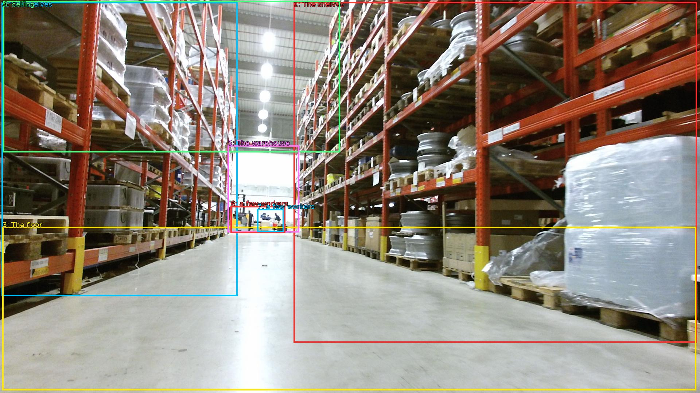

The image shows a large warehouse with rows of orange metal shelves. The shelves are filled with various items such as boxes, pallets, and containers. The floor is made of concrete and the ceiling is high with recessed lighting. The warehouse appears to be well-lit with natural light coming in from the windows on the left side of the image. In the background, there are a few workers visible. The overall atmosphere of the warehouse is busy and organized.

Original · Caption raw · Grounding raw · Koordinate
Številke so lokalni ID regije. Dolge slikovne oznake so skrajšane; spodaj so celotne fraze. Napovedane regije se lahko prekrivajo ali opisujejo skupine.
| ID | Celotna fraza | bbox xyxy |
|---|---|---|
| 1 | The shelves | [805.4400024414062, 5.940000057220459, 1911.3599853515625, 941.2200317382812] |
| 2 | The shelves | [4.799999713897705, 5.940000057220459, 651.8399658203125, 813.780029296875] |
| 3 | The floor | [6.71999979019165, 623.7000122070312, 1909.43994140625, 1072.9801025390625] |
| 4 | ceiling | [8.639999389648438, 2.700000047683716, 932.1599731445312, 418.5000305175781] |
| 5 | The warehouse | [624.9599609375, 399.0600280761719, 820.7999877929688, 638.8200073242188] |
| 6 | a few workers | [632.6400146484375, 566.4600219726562, 782.3999633789062, 640.9800415039062] |
| 7 | a few workers | [705.5999755859375, 574.02001953125, 778.5599975585938, 637.7400512695312] |